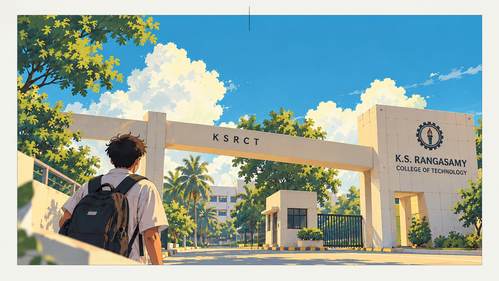
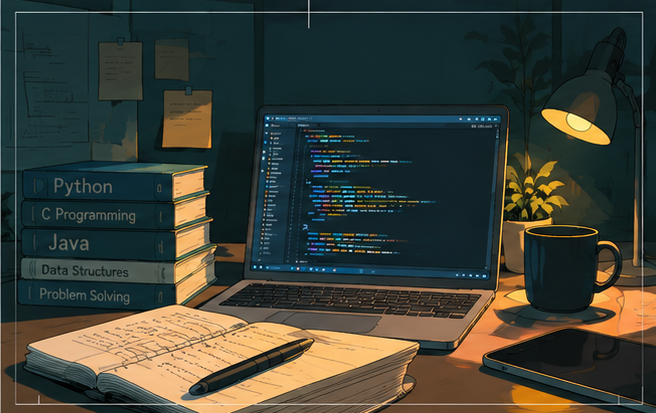
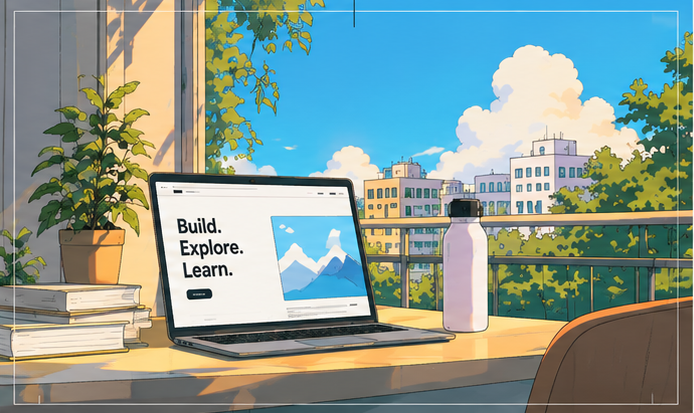
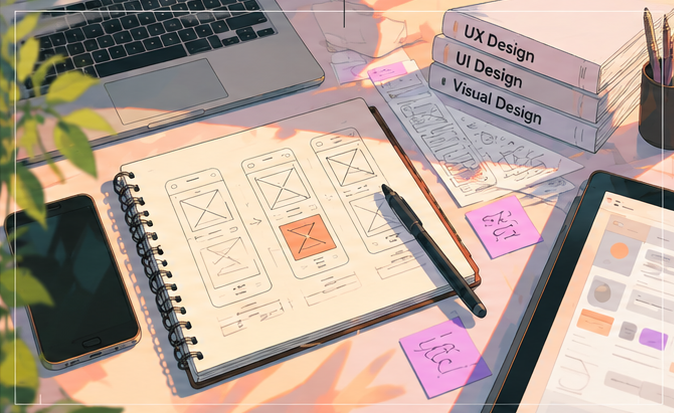
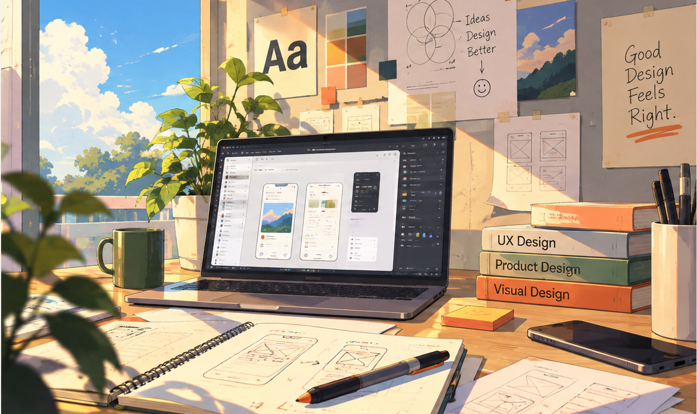
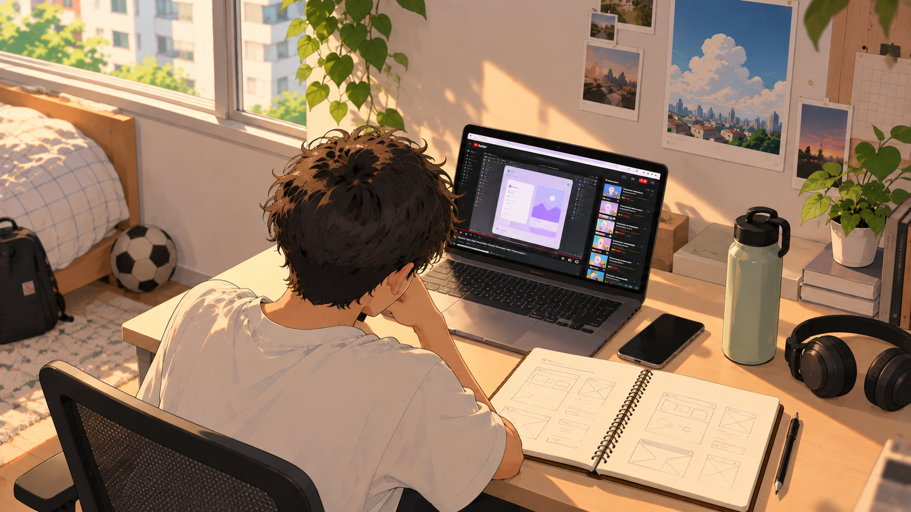
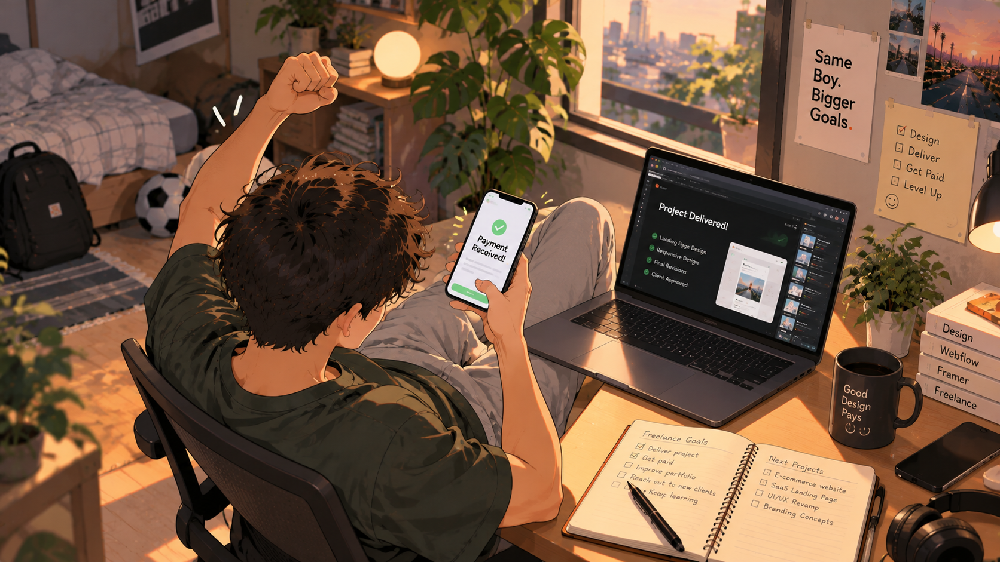
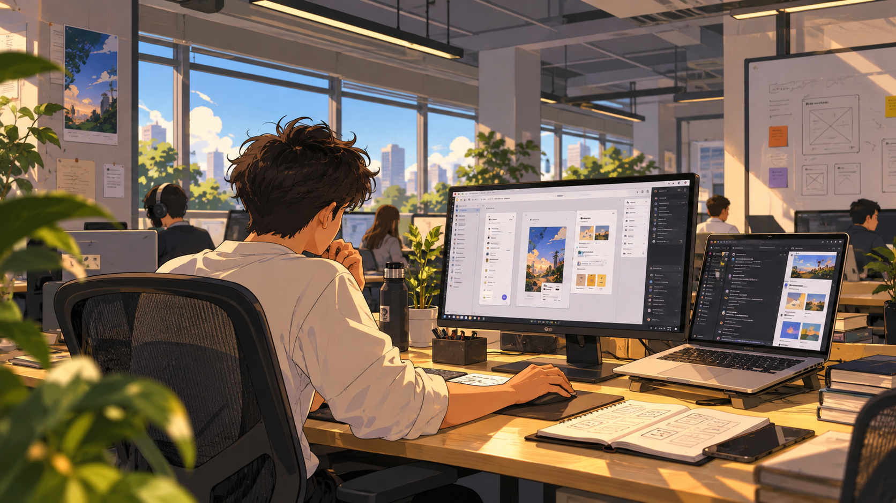
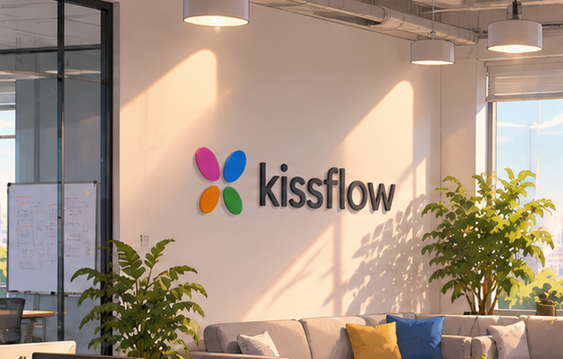
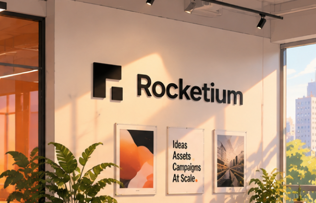

A FEW TURNS ALONG THE WAY01 — 09
I didn’t have it
figured out. I just
kept following.
Here’s how biotechnology somehow led me to design.
↓2022 · THE START
Biotechnology.
I started my engineering degree in Biotechnology.
Honestly, I didn’t really know why I chose it.

SECOND YEAR · THE DETOURIt wasn’t really
It wasn’t really
for me.
So I tried different things — coding, the web, and eventually design.



DISCOVERING DESIGNThen something
Then something
clicked.
UX. Product. Visual design.
It finally felt like my thing.

LEARNING · AFTER HOURSSo I taught
So I taught
myself.
YouTubeCourseraGoogle UXLots of experimenting


THIRD YEAR · MAKING IT REALMore than
More than
an interest.
I started building projects and freelancing. I even earned enough to buy my first iPhone.
FIRST INTERNSHIPMy first real
My first real
design role.
At Quick App Studio, working on TrackPilots.ai.

NEXT · SAAS DESIGNKissflow.
Kissflow.
Then Rocketium.
New teams, new formats, and a wider view of what design could be.


TODAY · STILL IN PROGRESSDesign.
Design.
Build.
Animate.
Experiment.
Still figuring it out.
Still making things.